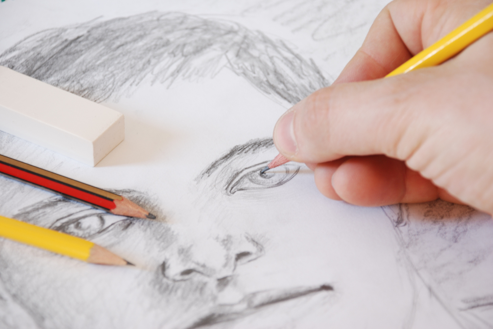
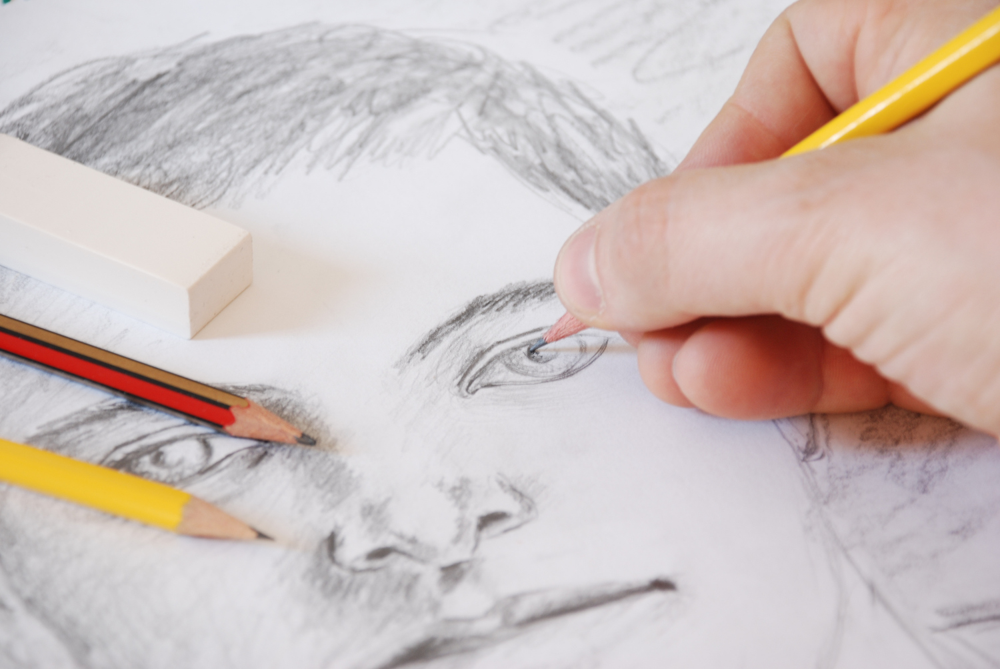

Alles neu
Peter Fox
Ich verbrenn mein Studio, schnupfe die Asche wie Koks Ich erschlag meinen Goldfisch, vergrab ihn im Hof Ich jag meine Bude hoch, alles was ich hab lass ich los (uh!) Mein altes Leben, schmeckt wie 'n labbriger Toast Brat mir ein Prachtsteak, Peter kocht jetzt feinstes Fleisch Ich bin das Update, Peter Fox 1.1 Ich will abshaken, feiern, doch mein Teich ist zu klein Mir wächst neue Reihe Beißer wie bei'm weißen Hai Gewachst, gedopet, poliert, nagelneue Zähne Ich bin euphorisiert, und habe teure Pläne Ich kaufe mir Baumaschinen, Bagger und Walzen und Kräne Stürze mich auf Berlin, drück auf die Sirene Ich baue schöne Boxentürme, Bässe massieren eure Seele Ich bin die Abrissbirne für die deutsche Szene Hey, alles glänzt, so schön neu Hey, wenn's dir nicht gefällt, mach neu (whoo) Die Welt mit Staub bedeckt, doch ich will sehn wo's hingeht Steig auf den Berg aus Dreck, weil oben frischer Wind weht Hey, alles glänzt, so schön neu Ich hab meine alten Sachen satt und lass sie in 'nem Sack verrotten Motte die Klamotten ein und dann geh ich nackt shoppen Ich bin komplett renoviert, Bräute haben was zu glotzen Kerngesund, durchtrainiert, Weltmeister im Schach und Boxen Nur noch konkret reden, gib mir ein ja oder nein Schluss mit Larifari, ich lass all die alten Faxen sein Sollt ich je wieder kiffen, hau ich mir 'ne Axt ins Bein Ich will nie mehr Lügen, ich will jeden Satz auch so meinen Mir platzt der Kopf, alles muss sich verändern Ich such den Knopf, treffe die mächtigen Männer Zwing das Land zum Glück, kaufe Banken und Sender Alles spielt verrückt, zitternde Schafe und Lämmer Ich seh besser aus als Bono, und bin'n Mann des Volkes Bereit die Welt zu retten, auch wenn das vielleicht zu viel gewollt ist Hey, alles glänzt, so schön neu Hey, wenn's dir nicht gefällt, mach neu (whoo) Hier ist die Luft verbraucht, das Atmen fällt mir schwer Bye Bye ich muss hier raus, die Wände kommen näher Die Welt mit Staub bedeckt, doch ich will sehn wo's hingeht Steig auf den Berg aus Dreck, weil oben frischer Wind weht Hey, alles glänzt, so schön neu